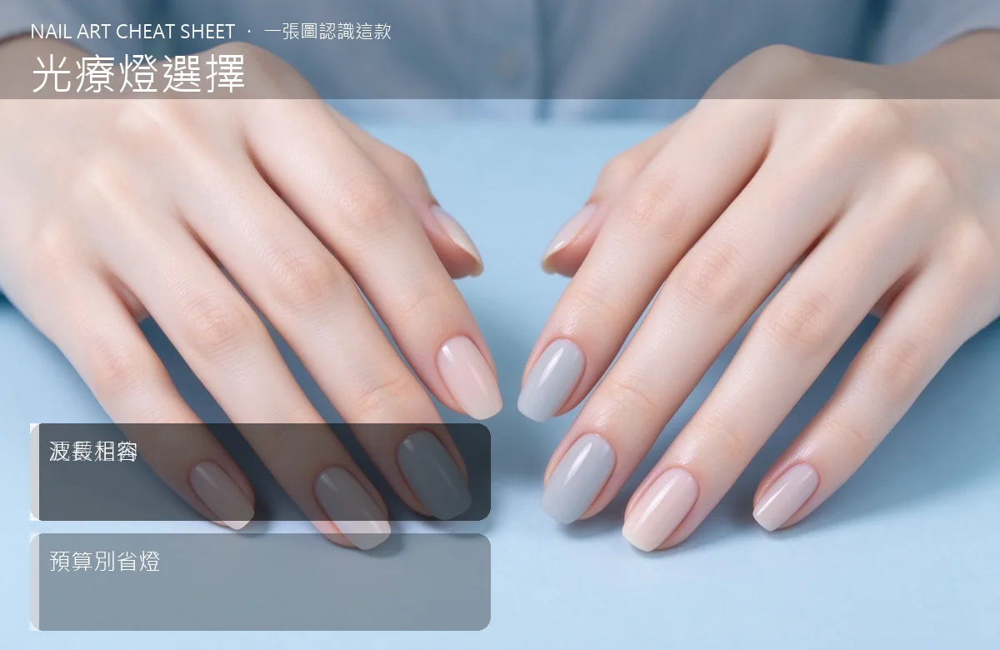

美甲光療燈選擇是什麼？中階入門攻略
光療燈別省錢，瓦數不夠照不乾，一整副指甲等於白做。
光療燈選擇原理與辨識重點：美甲師不說的瓦數足夠
光療燈是讓凝膠固化的必備設備，分 LED 和 UV 兩種。LED 反應快（30–60 秒）、UV 慢（2–3 分鐘）但通用。瓦數決定亮度，常見 36W 起跳，瓦數不足會造成「外乾內濕」，表面看似硬、裡面還黏。
誰適合做光療燈選擇？買燈前必看對號入座
所有做凝膠美甲的人都需要，沙龍等級建議買高瓦數專業燈。
光療燈選擇美甲施作步驟：瓦數＋波長
先確認你用的膠標明 LED 還是 UV → 挑 36W 以上、LED 晶片均勻分布的燈 → 記得帶手動計時 → 燈用 1–2 年亮度會衰退，要定期更換燈泡或整台。
光療燈選擇優缺點分析：美甲持久度與傷甲評估
| 優點 | 說明 |
|---|---|
| 好燈照得快、固化均勻，客人不易過敏、持久度也夠。 | 是通用流派的招牌，中階就能上手 |
| 缺點 | 說明 |
| 便宜燈瓦數虛標，照半天還黏，等於浪費膠和時間。 | 前置與別買不到 1000 元的那種網紅小燈。看起來美、瓦數不夠，客人做完兩天就起翹。燈是省不得的設備。沒顧好會打折 |

光療燈選擇新手雷區：波長相容與常見錯誤
注意：別買不到 1000 元的那種網紅小燈。看起來美、瓦數不夠，客人做完兩天就起翹。燈是省不得的設備。
光療燈選擇和其他美甲做法的差別比較
LED 燈跟 UV 燈不能完全通用。多數新凝膠是 LED/UV 雙用，但有些早期 UV 膠 LED 燈照不乾。買燈前對一下你常用膠的標示。
光療燈選擇美甲常見問題 FAQ
Q：買幾瓦才夠？ A：全手型建議 36W 起跳，54–72W 更快更均勻。瓦數不是越高越好，太高會燙傷，36–48W 是甜點。
Q：一台燈多少錢？ A：入門 1500–2500 元，沙龍專業款 3000–6000 元。沙龍建議直接買 4000 元等級以上，耐用又穩。
Q：燈要換嗎？ A：LED 晶片不像燈泡會燒壞，但亮度會慢慢衰減。照不乾的頻率變高，就是該換了，約 1–2 年。